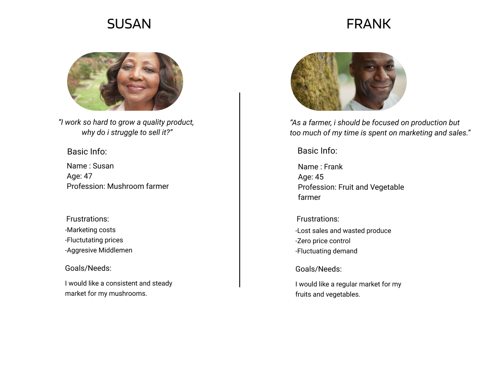
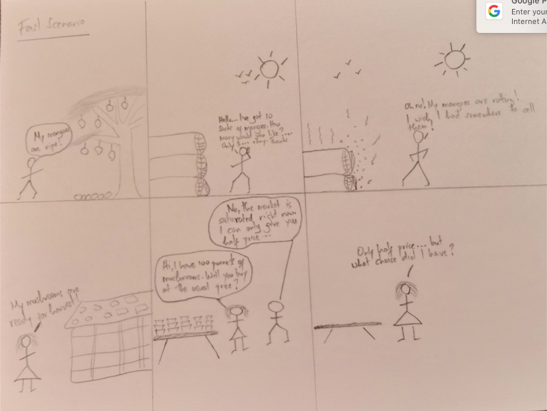

AFRICAN WOMEN'S AGRICULTURAL NETWORK
A non-profit organization comprised primarily of women farmers aimed at furthering the agenda of women and youth in agribusiness.

1.EMPATHISE
Interview/Seek to understand
In this phase I sought insight and explored challenges, needs and opportunities.I particularly tried to put myself in the shoes of the typical network member who would be the main user. The typical network farmer is a smallholder farmer who grows his own crops and seeks to receive a fair compensation upon their sale. Being a smallholder farmer, their produce will be low in quantity and irregularly produced. He or she will typically be responsible for harvesting, marketing, transportation and sale of the crops himself. The small holder farmers considerations are roughly listed below: -Harvesting -labor, -packaging -storage -wastage -Marketing -finding buyers, -guarantee of quality -exchanging of funds -Transportation -finding suitable public or private vehicles to ferry goods with minimum damage -final pick up or delivery to customerAs informed during the interview, the AWAN farmers group seeks to develop a market for its 100+ members. This market will facilitate the exchange of goods within its members i.e. Farmers will buy and sell produce amongst themselves within the AWAN network.
2.DEFINE
Personas
Frank is a 35 year old husband and father of 2 children in Nyeri. He has a 3 acre farm on which he keeps 10 chicken, 3goats, and 1 cow on a half acre. He also grows various vegetables on the remaining portion of land. He grows Spinach, Sukuma, Managu, Terere and Kunde. He also has a number of mango and avocado trees which produce fruit periodically. He usually harvests his vegetables and sells them to a middleman who then marks up and sells them at the local market twice a week. He also sells the fruits when they are in season by collecting them and transporting them to the local market by matatu. His main objective is to make enough money to feed and educate his family. Susan is a 31 year old lady who works as a civil servant. She has 2 children and lives on a 2 acre piece of a land in Kericho. She is a mushroom farmer. Susan sometimes supplies her local restaurant whenever she gets an order. Otherwise she sells her produce to her friends, neighbours and colleagues at work. She also sells to middlemen and supermarkets. Her objectives are to receive some supplemental income to improve her family’s standard of living.
Role objectives
Both Susan and Frank have the similar objectives of:- receiving fair compensation for produce
- reducing overhead costs
- minimising the effect of sudden price drops caused by the ever shifting forces of supply and demand
- Minimising uncertainty of customer retention
Challenges & Pain points
As informed during the interview farmers within the AWAN network are experiencing a number of challenges:- Loss of sales and wasted harvest
- Unreliable transportation vehicles
- Goods damaged in transportation
- High entry/participation charges at various farmers markets
- Unreliable market demand
- Middlemen eating into profit margins
- Lack of knowledge on best farming practices, available facilities and programs etc.
Decision and problem solution
With these challenges and pain point in mind as informed by the customer journey maps, it was decided to focus on the pain point of Marketing. It was clear that a large majority of the challenges were felt at the point of marketing and a solution focused around this point held the most promise for improvement to the customers journey.3.IDEATE
Diverge/converge
A number of ideas were shared in order to arrive at a solution that was beneficial to all members. Some of the key ideas shared were:- Build a social network
- Build an online auction site
- Build a member database for individual sales
- Provides an online directory for each members use
- Link farmers to other sales portals
Prioritization
The key conclusion was that E-Commerce functionality should be prioritised. Our solution proposes to offer a platform for the marketing and sale of farm goods so that farmers can focus on production knowing that marketing and price control concerns are under control. A key additional feature to be included is a blog that will help AWAN to keep its farmers informed and trained on key areas such as financing opportunities, plating methods, etc. The AWAN members management team would be the HUB that connected all its members and therefore a solution emulating this setup was most desirable. THe E-Commerce platform would enable AWAN farmers to buy and sell produce but only with the authorization of AWAN management team.4.PROTOTYPE
Storyboards
I began by creating storyboards of a farmers typical process consistent with the interviews and journey maps. The first storyboard illustrated the typical fail scenario, while the second painted a picture of the desirable success scenario.- a.Fail Scenario 
- b.Success scenario
Journey Maps
- Fail
- Success

.png)
- Fail
- Success

.png)
Wireframes
Next, i got to work on the wireframes conceptualizing the design of the web solution i would be building.

High Fidelity Mock ups
The outcome was a High Fidelity Mockups shown below.